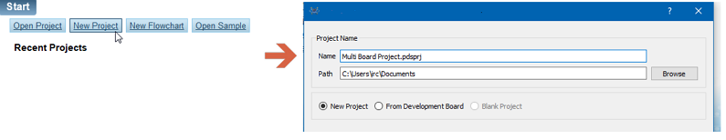
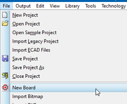
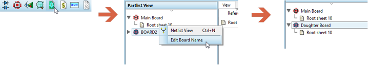
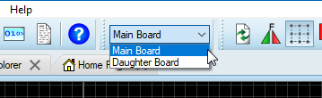
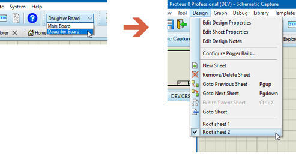
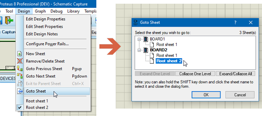
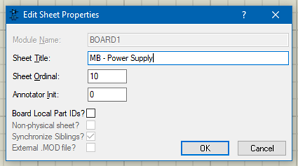
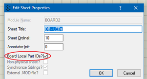
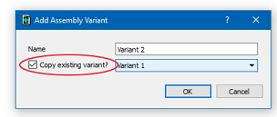

This topic discusses using a single schematic to design a system with multiple PCB boards. For information on using a single schematic with multiple boards for simulation purposes please refer to the Proteus VSM help file.
When your product design includes more than one PCB you need to create a multi-board project in Proteus. A multi board project comprises of a single schematic design but multiple separate PCB boards where each PCB board can have it's own design rules and board stackup.
At the time of writing it is intended for use with multiple discrete rigid boards (e.g. mini connector boards) but we intend over time to enhance the scheme to more fully support flexi-design as well.
To create a multi-board project:
1) Run the New Project Wizard in the normal way. This will create a project with a single schematic and PCB board.

2) Switch to the PCB tab. Add any additional boards one at a time from the new board command on the File menu.

This creates additional boards with customisable stackup and drilling.
3) When you have multiple boards in the project you'll see a board selector appear at the top of application. This is the board selector and is a global combo box listing the boards in the project. You'll most likely want to rename the boards so switch to the design explorer tab and right click on the board names to change them.

Design Explorer is the module in Proteus that provides a global view of the project. It's a great place to look at project overview and for navigation via the right click context menu..
Don't try to have multiple boards on a single PCB view. You won't be able to configure stackups or design rules, the connectivity will become confusing and the scope for costly mistakes is high. You should create new boards and work within the framework outlined above.
Now that we have created multiple boards it's important to understand how the system is intended to work. At any time you are working on a single board as defined in the global combo box at the top of the application. This has advantages for performance since only one board is rendered at a time and also provides clear separation between the boards to allow different design rules and layer stacks on each PCB. You can quickly switch between boards at any time by toggling the board selector.

Switch between boards with the selector.
On the schematic side you need to remember that a sheet belongs to a board. So, to work on the design for a particular board you need first to select the board and then select the sheet in the normal way from the Design menu.

Navigate to a sheet on the schematic.
If you prefer to navigate globally you can do so from the Design Explorer as shown earlier or you can use the Global Goto Sheet command on the Design menu in the Schematic Module.

Using Goto Sheet Command for Global Navigation
It's useful to map the Goto Sheet command onto a keyboard shortcut for quick navigation if you choose to use this method (System Menu -> Set Keyboard Mapping).
It can help with clarity if you name the schematic sheets as well. You can do this for the current sheet from the Edit Sheet dialogue form on the Design Menu:

Renaming Sheet with Prefix indicating the Board.
Now that the basic setup is complete you can start design and development in the same way as normal. You work on one board at a time and simply use the board selector to switch between the different boards in the product. That said, there are a few areas where some extra thought and consideration are required.
The question here is whether the annotation should be global to the project or global to the board. The default is global to the board rather than the project but you can change this by unchecking the box on the Edit Sheet properties dialogue. You only need to do this for one sheet per board.

Uncheck this on each Board for Project Global Annotation.
The top level for tools like the Global Annotator is Board Level. If you re-annotate in total mode at board level you will either get completely independent annotation (Board Local Part ID's) or completely unique annotation (Project Global Annotation)
In practise, we'd recommend board local annotation since it makes documentation like the BOM and Assembly Drawings more easily understood.
You clearly can't have different elements of multi-element parts on different boards since the footprint needs to be housed on one board. The system will try to detect this but with manual annotation it's possible to get this wrong.
Keep all elements of a multi-element part on the same board.
Power rail configuration is global to the project, not the board. If you need board specific power rails you can create extra in the Power Rail Configuration dialogue form.
Since Net Classes relate to Design Rules they are Board Local.
Assembly variants are global to the project. You cannot for example have Variant 1 of Daughter Board 2 along with Variant 2 of the Main Board. Instead you should create a new variant and use the 'copy from variant' option in Design Explorer to initialise the whole project from the nearest variant. You can then make the necessary changes to the board or boards required for the new variant.

Create a new Variant based on an old one.
You can build a sub-circuit hierarchy on a board in exactly the same way as you would in a single board project. You can even have mirrored sub-circuits on different boards, although it may be a little hard to keep track if you do so.
The standard header block items are project global and set in the Edit Design Properties command on the schematic editor. If you want board specific content on the header block you can use the @BOARD syntax.
See Also:
Design Rules and Net Classes are board local. This allows you to set object clearances and routing widths for each board in the project independently. Coupled with the individual board stackup and drilling it means that each board is treated as a separate entity in the project.
All of the output systems work on a per-board basis. Whether it's the Bill or Materials or the CADCAM Output you will need to generate the fileset for each board.
Switching boards automatically saves the current board to disk and then loads the requested board from disk. With multiple large boards in a project there may be slight delay while this happens.
It's possible with several complex boards that the file size on disk of the PDSPRJ file becomes quite large. However, we don't anticipate problems in development since only one board is loaded at any given time.
If you have added a board, or have decided that you no longer need a second or third board you may wish to remove it from the project. In order to do this you need to delete the schematic board associated to the board.